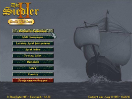
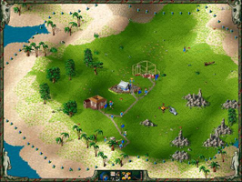
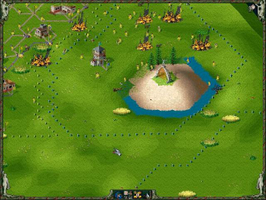

Die Siedler II
Dieser Artikel wurde für die folgenden Ubuntu-Versionen getestet:
Ubuntu 14.04 Trusty Tahr
Zum Verständnis dieses Artikels sind folgende Seiten hilfreich:
Die Siedler II ist eine Wirtschaftssimulation, die vom deutschen Entwicklerstudio Bluebyte  1996 veröffentlicht wurde. Sie besticht trotz ihres Alters heute noch durch die detailierte und liebevoll gestaltete Pixel-Grafik. Als DOS-Spiel lässt es sich gut unter Linux emulieren. Wer Siedler 2 im Netzwerk/Internet spielen möchte, der ist bei dem Open-Source Projekt Return to the Roots gut aufgehoben. Wer das Originalspiel Die Siedler II – Veni, Vidi, Vici nicht besitzt, findet mit Widelands eine komplett freie Alternative. Folgend wird die Emulation des Originalspiels von 1996 mit Dosemu und DOSBox beschrieben.
1996 veröffentlicht wurde. Sie besticht trotz ihres Alters heute noch durch die detailierte und liebevoll gestaltete Pixel-Grafik. Als DOS-Spiel lässt es sich gut unter Linux emulieren. Wer Siedler 2 im Netzwerk/Internet spielen möchte, der ist bei dem Open-Source Projekt Return to the Roots gut aufgehoben. Wer das Originalspiel Die Siedler II – Veni, Vidi, Vici nicht besitzt, findet mit Widelands eine komplett freie Alternative. Folgend wird die Emulation des Originalspiels von 1996 mit Dosemu und DOSBox beschrieben.
|  |  |  |
| Hauptmenü | Tutorial | Spielszene |
Dosemu¶
Installation¶
Zuerst kopiert man das Verzeichnis S2 von der Spiele-CD in das Homeverzeichnis. Das ist notwendig, weil DOS nicht von CDs im Joliet-Format lesen kann. Danach startet man xdosemu [1]. Das Homeverzeichnis wird normalerweise als Laufwerk D: eingebunden. Man wechselt also in das S2-Verzeichnis und startet die Installation[2].
D: cd S2 install.bat
Soundkonfiguration¶
Anschließend muss noch der Sound eingerichtet werden. Dazu bewegt man sich in das Verzeichnis, in das die Siedler2 installiert wurde und gibt dort
setup.exe
ein.
Innerhalb des Setupprogramms wird folgende Soundkonfiguration eingestellt:
MIDI music: General MIDI (Roland MPU 401 interface or 100% compatible)
Digital audio: Creative Labs Sound Blaster 16 or AWE32
Bekannte Fehler¶
Das Intro funktioniert nicht.
Beim Klicken auf "Credits" stürzt das Spiel ab.
Bei Problemen mit der Maus sollte der Vollbildmodus mit Strg + Alt + F ausprobiert werden.
DOSBox¶
Installation¶
DOSBox sollte im Vorfeld auf deutsch (Sprache und Tastaturlayout) eingerichtet sein - Basisinformationen zu den Befehlen findet man im Artikel [3]. Im Homeverzeichnis einen Ordner Siedler2 anlegen. Sofern die Erweiterung vorhanden ist den Ordner Mission_CD ebenfalls erstellen. In die jeweiligen Ordner den Inhalt der CDs kopieren. Abschließend unter ~/.dosbox einen Ordner Drive_C anlegen. Nun DOSBox starten und die Verzeichnisse einbinden:
Basisspiel¶
mount c /home/Benutzername/.dosbox/Drive_C mount d /home/Benutzername/Siedler2 -t cdrom d: INSTALL.BAT
Als Speicherpfad C:/SIEDLER2 wählen und in der Soundkonfiguration folgendes anklicken  :
:
Sound Configuration Utility¶
"Select and configure MIDI music driver"
"Creative Labs Sound Blaster(TM) 16"
"Attempt to configure sound driver automatically"
"OK"
"Select and configure digital audio driver"
"Creative Labs Sound Blaster 16 or AWE32"
"Attempt to configure sound driver automatically"
"OK"
Spielstart¶
In DOSBox startet man das Spiel über
CD SIEDLER2 S2.EXE
Hinweis:
Darauf achten, dass man das korrekte Update verwendet!
Die Ordner Siedler2 und Mission_CD können nun gelöscht werden.
Hinweis:
Es empfiehlt sich den Ordner ~/.dosbox/Drive_C/SIEDLER2 seperat zu sichern.

Infobox¶
| Die Siedler II – Veni, Vidi, Vici | |
| Genre: | Simulation |
| Sprache: | |
| Veröffentlichung: | 1996 / 1997 (Gold) |
| Publisher: | Blue Byte GmbH |
| Systemvoraussetzungen: | Pentium 75 MHz / Grafikkarte / 16 MB RAM / 30 MB Festplattenplatz / CD-ROM Laufwerk |
| Medien: | CD (1) |
| Strichcode / EAN / GTIN: | 4014092002527 - 4012160460101 - 4014092001407 - 4014092001506 |
| Läuft mit: | DOSBox, Dosemu und nativ |
- Erstellt mit Inyoka
-
 2004 – 2017 ubuntuusers.de • Einige Rechte vorbehalten
2004 – 2017 ubuntuusers.de • Einige Rechte vorbehalten
Lizenz • Kontakt • Datenschutz • Impressum • Serverstatus -
Serverhousing gespendet von